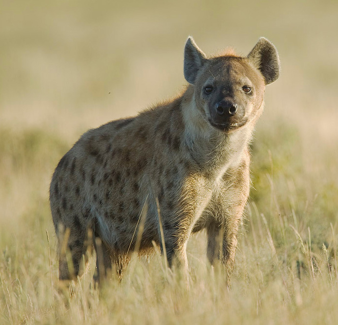

Hiena manchada.
Crocuta crocuta

La hiena manchada o hiena moteada (Crocuta crocuta) es una especie de mamífero
carnívoro de la familia Hyaenidae. Habita en África al sur del Sáhara en praderas y
terrenos abiertos llanos, ausente de la cuenca del río Congo, Madagascar, casi toda
Sudáfrica y desiertos como el Namib. Puede encontrarse incluso cerca de asentamientos
humanos.Es la única especie de su género y no se reconocen subespecies vivientes.
aunque durante el Pleistoceno vivió una subespecie, la hiena de las cavernas.
- La hiena manchada, con un peso que puede superar los 80 kg.
- Es la especie de mayor tamaño de los hiénidos.
- Por lo general se trata de animales nocturnos.
- Gozan de muy buen oído y visión, y de una gran agilidad debido a las garras de sus patas, que les permiten arrancar y correr a gran velocidad.
- También pueden correr a una velocidad de hasta 40-50 km/h a lo largo de varios kilómetros y se ha llegado a observar una persecución a lo largo de unos asombrosos 24 kilómetros.